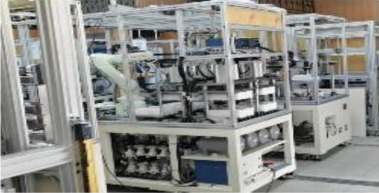
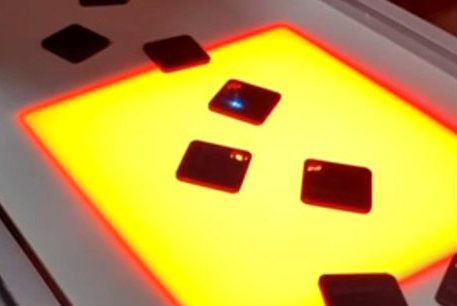
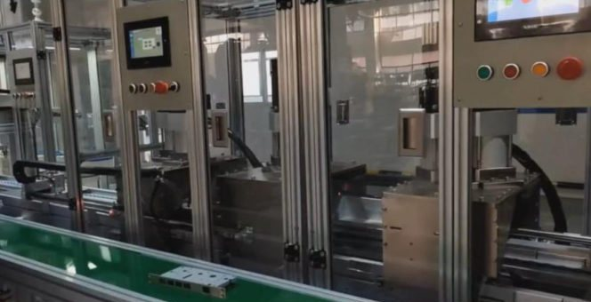
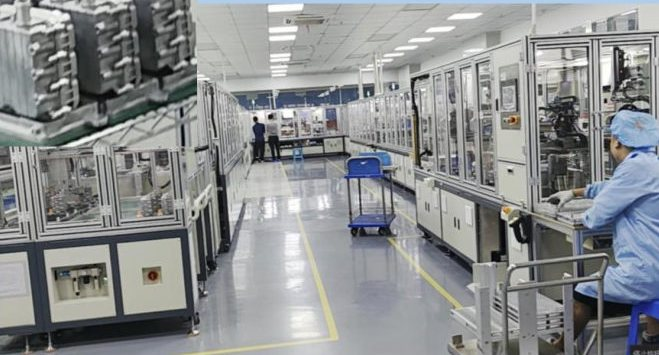
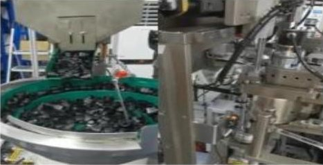

Giải pháp theo ngành
Hãy cho chúng tôi biết sản phẩm và sản lượng mục tiêu. Chúng tôi thiết kế máy hoặc cả dây chuyền theo đó.

Điện gia dụng nhỏ & chăm sóc cá nhân
Máy sấy tóc, máy cạo râu, máy tỉa, tông đơ và bàn chải điện: tán đinh, ép, bắt vít, dây chuyền lắp ráp, kiểm tra kín khí, chống nước và tuổi thọ.
- Máy tán khoen tự động cho đế khung nhiệt máy sấy tóc
- Máy tán tự động đầu cốt điện trở phân áp máy sấy tóc
- Máy tán tự động điện trở bộ gia nhiệt máy sấy tóc
- Máy sản xuất tự động cầu chỉnh lưu máy sấy tóc
- Máy lắp ráp tự động cụm cánh dẫn gió máy sấy tóc
- Máy cắt tự động theo chiều dài cầu chì nhiệt máy sấy tóc

Điện tử & kiểm tra bằng camera
Camera CCD phát hiện lỗi ngoại quan, định vị, lắp ráp và bắt vít theo camera, kiểm tra keo, phân loại vật liệu; hàn bo mạch và tạo hình linh kiện.
- Máy cắt và tạo hình chân điốt tự động
- Máy lồng ống bọc và tạo hình điện trở tự động
- Máy hàn bo mạch tự động

Khóa & kim khí
Dây chuyền hàn laser, lắp ráp và tán xoay cho thân khóa thông minh và cụm chi tiết kim loại.
- Dây chuyền hàn laser, lắp ráp và tán xoay khóa thông minh
- Dây chuyền lắp ráp và kiểm tra cụm sưởi nước PTC bảo vệ pin xe điện

Linh kiện ô tô & xe điện
Dây chuyền lắp ráp và kiểm tra cụm sưởi nước PTC bảo vệ pin; ép nhũ nóng lưới tản nhiệt ô tô.
- Máy ép nhũ nóng tự động nắp bơm tròn (Ø48 / Ø32 mm)
- Máy ép nhũ nóng tự động chữ rỗng định hình trên nắp mascara
- Máy ép nhũ nóng 10 tấn cho lưới tản nhiệt ô tô
- Máy khắc và đánh dấu bằng laser
- Dây chuyền hàn laser, lắp ráp và tán xoay khóa thông minh
- Dây chuyền lắp ráp và kiểm tra cụm sưởi nước PTC bảo vệ pin xe điện

Bao bì & mỹ phẩm
Ép nhũ nóng, in tampon và khắc laser tự động cho nắp mỹ phẩm; hàn và đóng gói vỉ nhựa.
- Máy ép trục motor bàn chải điện tự động
- Máy hàn cao tần và đóng gói vỉ nhựa đầu bàn chải điện
- Dây chuyền lắp ráp và kiểm tra bàn chải điện
- Máy ép nhũ nóng tự động nắp bơm tròn (Ø48 / Ø32 mm)
- Máy ép nhũ nóng tự động chữ rỗng định hình trên nắp mascara
- Máy ép nhũ nóng 10 tấn cho lưới tản nhiệt ô tô

May mặc
Thiết bị dây chuyền cho nhà máy may; đã giao và lắp đặt tại Việt Nam.